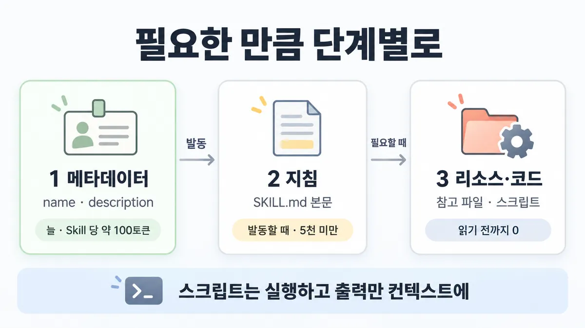
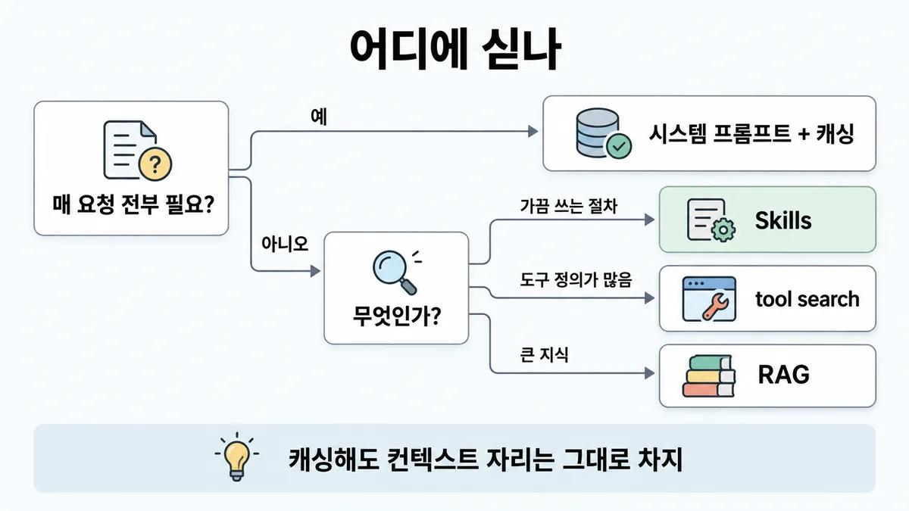
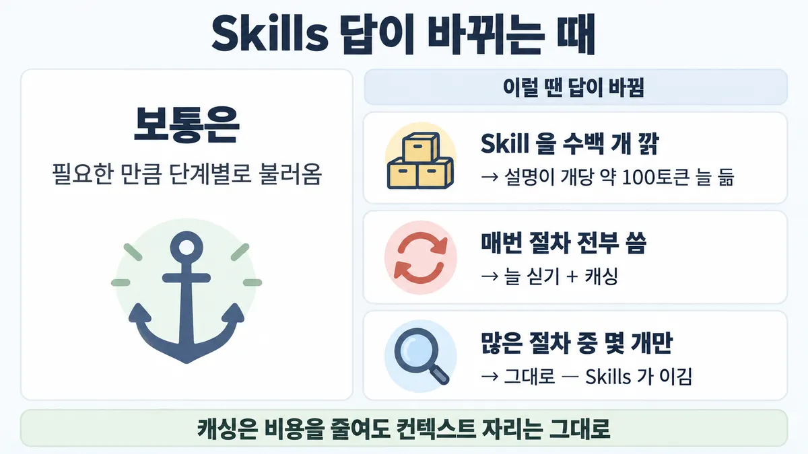

■ Agent Skills progressive disclosure
표시가 없는 문장은 공식 문서에서 확인한 내용이에요. 다른 표시는 읽는 법
왜 배우나 — 시험이 요구하는 것
시험 목표 3.8 점진 탐색과 통째 컨텍스트 · D3 연결 19%Evaluate progressive discovery vs. monolithic context strategy
이 개념으로 푸는 판단 (할 수 있어야 하는 것)
- 3.8③ 환불·배송·계정 절차서 40개를 에이전트에 쥐여 주는데 한 상담엔 1~2개만 필요하다 — 어떻게 싣나? — 점진 공개(Skills) vs 통째 싣기
- 2.5③ 같은 앞부분 · 같은 틀 · 가끔 필요한 전문지식 — 각각 무엇으로 재사용하나? — 재사용 수단 고르기 (프롬프트 캐싱 / 모듈형 프롬프트·템플릿 / Agent Skills)
한눈에
절차·전문지식을 폴더(SKILL.md + 참고 파일 + 스크립트)로 둔다. 그리고 컨텍스트를 미리 채우지 않고, 필요한 만큼 단계별로 불러온다
비유 man 페이지와 같다. whatis 한 줄 목록만 늘 떠 있다. 본문은 man 을 칠 때 나온다. 스크립트는 실행 결과만 화면에 나온다


ELI5
요리책 목차만 책상 위에 펴 두는 거예요.
- 목차에는 요리 이름과 "언제 만드는지" 한 줄만 있어요.
- 오늘 만들 요리가 정해지면 그 쪽만 펼쳐 읽어요.
- 계량은 손으로 안 하고 저울에 올려 숫자만 봐요.
- 이 쪽은 "언제 목차만 두고, 언제 책을 통째로 펴 두나"를 모아 둔 곳이에요.
개념 설명
원리
3단계 불러오기
- 1단계 메타데이터 :
name·description이다. 시작 때 시스템 프롬프트에 들어간다. Skill 당 약 100토큰이다. - 2단계 지침 : SKILL.md 본문이다. 요청이 description 과 맞으면 Claude 가 bash 로 읽는다. 5천 토큰 미만이다.
- 3단계 리소스·코드 : 참고 파일은 읽을 때만 들어온다(읽기 전 0). 스크립트는 실행하고 출력만 들어온다(코드는 안 들어온다).
- 그래서 Skill 을 많이 깔아도 발동 전에는 이름·설명만 자리를 차지한다. 번들 파일 크기에는 사실상 한계가 없다.
발동
- Claude 는 요청을 description 과 대조한다. 그래서 description 에 "무엇을 하나 + 언제 쓰나"를 다 적어야 한다. 100개 넘는 Skill 중에서도 이것으로 고른다.
잘 쪼개기
- SKILL.md 본문은 500줄 미만으로 둔다. 넘으면 파일로 나눈다.
- 참고 파일은 SKILL.md 에서 한 단계 깊이만 둔다. 파일이 파일을 부르면
head로 일부만 읽혀 정보가 빠질 수 있다. - 불러온 뒤에는 모든 토큰이 대화와 자리를 다툰다. 그래서 짧게 쓰고, Claude 가 아는 설명은 뺀다.
제약 (API)
- API 에서는 아래 제약이 있다.
- 코드 실행 도구가 꼭 있어야 한다
- 네트워크가 없다
- 실행 중에 패키지를 설치할 수 없다
- surface(쓰는 환경)끼리 동기화되지 않는다
- ZDR 대상이 아니다
- 믿을 수 있는 출처만 쓴다
핵심 질문 두 개
- 이 지식은 매 요청 전부 필요한가, 요청마다 일부만 필요한가?
- 필요한 일부를 description 만 보고 고를 수 있는가?
규칙과 판단


갈림길
③ 어디에 싣나 [3.8③] [2.5③]
시스템 프롬프트 + 캐싱
매 요청에 전부 필요한 안정 지식은 시스템 프롬프트에 넣고 ■ 프롬프트 캐싱 을 쓴다
Skills
가끔만 관련 있는 절차·전문지식은 Skills 에 둔다. MCP 는 데이터·시스템에 연결한다. Skills 는 그 데이터로 무엇을 어떻게 할지(절차 지식)를 담는다. 둘은 같이 쓴다
tool search
도구 정의가 많아 컨텍스트를 먹으면 tool search 를 쓴다 (세 갈래를 한 표로 가른 건 추론). 자세한 것은 ◆ 도구 미리 싣기 vs tool search 에 있다
RAG
큰 지식에서는 chunk 를 찾는다 (세 갈래를 한 표로 가른 건 추론). 자세한 것은 ■ RAG 파이프라인 에 있다
① 토큰 세기 [3.8③]
Skill 당 약 100
발동 전에는 이름·설명만 자리를 차지한다
5천 미만
SKILL.md 본문이 들어온다
읽기 전까지 0
참고 파일은 읽을 때 들어온다. 스크립트는 실행하고 출력만 들어온다
②④⑤ 고칠 곳 [3.8③]
description
"무엇을 하나 + 언제 쓰나" 를 둘 다 적는다. 내가 실제로 쓰는 말투의 키워드를 더한다 (Skilljar)
파일로 나눈다
SKILL.md 본문은 500줄 미만으로 둔다. 넘으면 파일로 나눈다
스크립트로
결정론적 작업은 스크립트로 둔다. SKILL.md 에 "읽지 말고 실행"을 적는다
흐름
그림 속 이름·금액·시간·토큰 수는 예시예요. 공식 한도·동작은 카드 본문 값이 기준.
장면 글로 보기
칸 : Skill 폴더 → bash → 컨텍스트
블록 : `name`·`description`, SKILL.md 본문, 참고 파일, 스크립트
질문 : Skill 을 60개 깔면 컨텍스트가 넘칠까?
① 발동 전 ✓
- 시작 : Skill 폴더 — 쪽지 : refund-policy/ / SKILL.md · forms.md / scripts/calc.py
- 메타데이터 :
name·description→ 컨텍스트 : Skill 당 약 100토큰 — 쪽지 : name: refund-policy / description: 환불 규정 / 적용. 환불 문의 때 - 끝 : 발동 전에는 이름·설명만 자리를 차지한다. 본문·파일·스크립트는 아직 0 이다
② 발동 ✓
- 시작 : Skill 폴더 — 쪽지 : refund-policy/ / SKILL.md · forms.md / scripts/calc.py
- 메타데이터 :
name·description→ 컨텍스트 : 요청을 description 과 대조한다 — 쪽지 : description: 환불 규정 / 적용. 환불 문의 때 - 지침 : SKILL.md 본문 → 컨텍스트 : 발동할 때 · 5천 토큰 미만 — 쪽지 : # 환불 절차 / 1. 주문일 확인 / 2. forms.md 양식 채움
- 리소스 : 참고 파일 → 컨텍스트 : 읽을 때 들어온다 — 쪽지 : bash: cat forms.md / 환불 신청 양식 …
- 끝 : 필요한 만큼 단계별로 불러온다. 쓰지 않는 Skill 은 이름·설명만 자리를 차지한다
③ 스크립트 ✓
- 시작 : Skill 폴더 — 쪽지 : scripts/calc.py / (코드 180줄)
- 실행 : 스크립트 → bash : 스크립트는 실행한다 — 쪽지 : $ python scripts/calc.py / --order A-1024
- 출력 : bash → 컨텍스트 : 출력만 들어온다 — 쪽지 : 환불액: 26,000원
- 끝 : 코드 180줄은 컨텍스트에 안 들어간다. 출력 한 줄만 들어간다
나머지 규칙
-
API 에는 제약이 있다
- 코드 실행 도구가 꼭 있어야 한다
- 네트워크가 없다
- 실행 중에 패키지를 설치할 수 없다
- surface(쓰는 환경)끼리 동기화되지 않는다(claude.ai 에 올린 Skill 은 API 에 따로 올린다)
- 공유 범위는 claude.ai 개인 / API 워크스페이스 / Claude Code 개인·프로젝트 폴더다
- ZDR 대상이 아니다
- 믿을 수 있는 출처(직접 만듦 · Anthropic)만 쓴다. 외부 URL 을 가져오는 Skill 은 특히 위험하다. 자세한 것은 ■ 프롬프트 인젝션 피해 경로 끊기 에 있다
API 에서 베타는 2026-08-19 에 끝났다(베타 헤더가 필요 없다) 시험 뒤 변경 헤더만 바뀜, 판단엔 영향 없음
규칙 원문 ①②③④⑤ (갈림길로 그린 규칙)
-
불러오기는 3단계다 [3.8③] [2.5③]
단계 언제 토큰 무엇 1 메타데이터 항상(시작 때 시스템 프롬프트에) Skill 당 약 100 name·description2 지침 발동할 때 5천 미만 SKILL.md 본문 3 리소스·코드 필요할 때 읽기 전까지 0 참고 파일은 읽을 때 들어온다. 스크립트는 실행하고 출력만 들어온다 발동 전에는 이름·설명만 자리를 차지한다. 그래서 Skill 을 많이 깔아도 컨텍스트 부담이 없다
-
발동 : Claude 는 요청을
description과 대조한다. 그래서 "무엇을 하나 + 언제 쓰나" 를 둘 다 적는다. 100개 넘는 Skill 중에서 고르는 기준이 description 이다안 불리면 내가 실제로 쓰는 말투의 키워드를 더한다 (Skilljar)
-
무엇을 어디에 싣나
- 매 요청에 전부 필요한 안정 지식은 시스템 프롬프트에 넣고 ■ 프롬프트 캐싱 을 쓴다
- 가끔만 관련 있는 절차·전문지식은 Skills 에 둔다 (Skilljar : CLAUDE.md 는 늘 적용되는 규칙이다. Skills 는 가끔만 관련 있는 절차다)
- 도구 정의가 많아 컨텍스트를 먹으면 ◆ 도구 미리 싣기 vs tool search 를 본다
- 큰 지식에서 chunk 를 찾으면 ■ RAG 파이프라인 을 본다
세 갈래를 한 표로 가른 건 추론이다
MCP vs Skills : MCP 는 데이터·시스템에 연결한다. Skills 는 그 데이터로 무엇을 어떻게 할지(절차 지식)를 담는다. 연결할 라이브 시스템이 없으면 MCP 가 아니다. 둘은 같이 쓴다
-
쪼개는 법은 다음과 같다
- SKILL.md 본문은 500줄 미만으로 둔다. 넘으면 파일로 나눈다
- 참고 파일은 SKILL.md 에서 한 단계 깊이만 둔다. 파일이 파일을 부르면
head로 일부만 읽힐 수 있다 - 100줄 넘는 참고 파일에는 맨 위에 목차를 둔다
- 도메인별로 나눠서 무관한 파일은 안 불러온다
불러온 뒤에는 모든 토큰이 대화와 자리를 다툰다. 그래서 짧게 쓴다. Claude 가 이미 아는 설명은 뺀다
-
결정론적 작업은 스크립트로 둔다. 코드는 컨텍스트에 안 들어가고 출력만 들어간다. 그래서 같은 코드를 즉석 생성하는 것보다 효율적이다. SKILL.md 에 "읽지 말고 실행"을 적는다 (docs + Skilljar)
더 깊이 : 판단 규칙 · 상황 변수 (설명)
판단 규칙
| 조건 | 답 | 등급 | 근거 |
|---|---|---|---|
| 절차·전문지식이 많고 요청마다 일부만 필요하다 | Skills (progressive disclosure, 점진적 공개) | agent-skills overview | |
| 매 요청에 늘 적용되는 규칙이다 | 늘 싣는다(Claude Code 면 CLAUDE.md, API 면 시스템 프롬프트). 그리고 ■ 프롬프트 캐싱 을 쓴다 | (Claude Code 쪽) · API 쪽은 추론 | Skilljar 434528 "Use CLAUDE.md for: Project-wide standards that always apply" |
| Skill 이 안 불린다 | description 에 무엇 + 언제 + 실제 쓰는 키워드를 적는다 | overview · best-practices · Skilljar 434526 | |
| SKILL.md 가 길어진다 | 500줄 미만으로 두고, 나머지는 한 단계 깊이 참고 파일로 뺀다 | best-practices | |
| 결정론적 작업(검증·변환)이다 | 스크립트로 두고 "읽지 말고 실행"을 적는다 | overview · Skilljar 434526 | |
| API 에서 Skills 를 쓴다 | 코드 실행 도구를 켜고 container 에 skill_ 를 넣는다 | overview | |
| ZDR 이 필요한 고객이다 | Skills 는 ZDR 대상이 아니다. 다른 방식을 검토한다 | (대상 아님) · 대안은 추론 | overview |
상황 변수
| 변수 | 값 | 답 쪽 | 등급 | 근거 |
|---|---|---|---|---|
| 한 요청에 필요한 비율 | 전체 절차 중 일부다 | Skills | 판단 규칙 1 | |
| 한 요청에 필요한 비율 | 전부다 | 늘 싣고 캐싱한다 | 계산 | 뒤집히는 때 2 |
| Skill 개수 | 수백 개다 | 1단계만으로도 수만 토큰이다. 늘 드는 비용을 셈에 넣는다 | 계산 | 뒤집히는 때 1 |
| 절차가 외부 API 를 불러야 한다 | API surface | API Skills 는 네트워크가 없다. 도구나 MCP 로 부른다 | overview | |
| 쓰는 surface | claude.ai 와 API 둘 다 | 각각 따로 올린다 | overview | |
| 데이터 보존 계약 | ZDR 이 필요하다 | Skills 는 대상이 아니다 | overview | |
| Skill 출처 | 외부에서 받았거나, 외부 URL 을 가져온다 | 전부 감사한다. 외부 URL 을 가져오면 특히 위험하다 | overview |
연습 문제
고객지원 에이전트에 환불·교환·배송 분쟁 같은 상담 절차 60개절차 지식를 붙이려 한다. 상담 한 건에는 그중 두세 개만 쓴다일부만 필요. 팀장은 "전부 시스템 프롬프트에 넣고 캐싱하면 싸다"고 한다. 절차를 어디에 둬야 하나?
시험 대비
함정
- "1단계 100토큰 → 2단계 SKILL.md → 3단계 5K 리소스" 로 토큰을 세는 것은 함정이다. 5천은 2단계 SKILL.md 의 상한이다. 3단계는 읽기 전에 0 이다
- "Skill 을 많이 깔면 컨텍스트가 넘친다" 는 함정이다. 발동 전에는 이름·설명만 들어온다 (그래도 Skill 당 약 100토큰은 늘 든다. 설명 쪽 뒤집히는 때 1 에 있다)
- "가끔 쓰는 절차까지 전부 시스템 프롬프트에 넣고 캐싱한다" 는 함정이다. 캐싱은 비용을 줄여도 컨텍스트 자리는 그대로 차지한다 업계 일반 context rot 원칙의 적용
- "SKILL.md 한 파일에 2천 줄을 쓴다" 는 함정이다. 500줄 미만으로 두고, 나머지는 파일로 나눈다
- "claude.ai 에 올린 Skill 이 API 에서도 자동으로 쓰인다" 는 함정이다. API 에 따로 올린다
- "description 은 '문서 작업 도움' 정도면 된다" 는 함정이다. 무엇과 언제를 적고, 구체적 키워드를 넣는다
- "API Skill 이 외부 API 를 불러 최신 데이터를 가져온다" 는 함정이다. API Skills 에는 네트워크가 없다
신호
"Claude loads information in stages as needed, rather than consuming context upfront."
"Progressive disclosure ensures only relevant content occupies the context window at any given time."
"until a Skill is triggered, only its name and description occupy context."
"Claude runs them through bash and receives only the output (the script code itself never enters context)."
"Keep SKILL.md body under 500 lines for optimal performance"
"Using Skills through the API requires the code execution tool"
"Skills uploaded to claude.ai must be separately uploaded to the API"


더 깊이 : 뒤집히는 때 · 오답 재료 (설명)
뒤집히는 때
1. Skill 을 수백 개 깔면 1단계도 무거워짐
- 조건 : Skill 이 250개다.
- 계산 : 250 × 약 100 = 약 2만 5천 토큰이 매 요청에 늘 들어간다. 20만 토큰 창의 약 12.5% 다.
- 판단 : 공식은 "많이 깔아도 부담 없음"이라고 한다. 그러나 그것은 본문과 파일이 안 들어온다는 뜻이다. description 당 약 100토큰은 늘 든다. 그래서 수백 개면 늘 드는 비용을 셈에 넣는다. 캐싱되는 앞부분이라 비용은 줄지만, 자리는 그대로 차지한다.
- 등급 : 계산 (Skill 당 약 100토큰은 확인)
- 근거 : overview · best-practices("potentially 100+ available Skills")
2. 절차가 매 요청 전부 필요하면 Skills 가 오히려 손해
- 조건 : 절차 5개 × 3천 토큰 = 1만 5천이다. 모든 상담이 5개를 다 쓴다.
- 계산 :
- 늘 싣기 + 캐싱 : 1만 5천 × 0.1 = 요청당 캐시 안 된 토큰 1,500개 값어치다. 도구 호출은 없다.
- Skills : 1단계 500 에 더해, 매 상담 SKILL.md 5개를 읽는 bash 호출이 5번 일어난다. 1만 5천이 대화 중간에 들어온다(그 턴에는 캐시되지 않는다). 그리고 호출 왕복 지연(latency)이 생긴다.
- 판단 : 전부 필요하면 progressive disclosure 가 아낄 것이 없다. 그래서 늘 싣고 캐싱한다. progressive disclosure 는 "일부만 필요"일 때 쓸 만하다.
- 전제 : 캐시가 매 요청 적중한다. 가격 배수 0.1 은 2026-09-28 조회값이다.
- 등급 : 계산 (0.1배 · SKILL.md 는 bash 로 읽음은 확인)
- 근거 : ko-pricing · overview · Skilljar 434528
3. 절차 60개 중 한 상담에 3개 — Skills 가 자리·비용 모두 이김
- 조건 : 절차 60개 × 평균 2,500토큰 = 15만이다. 한 상담에 3개를 쓴다.
- 계산 :
- 통째로 늘 싣기 : 자리는 15만이다(20만 창의 75%). 캐시 적중 시 비용은 15만 × 0.1 = 캐시 안 된 토큰 1만 5천개 값어치다.
- Skills : 자리는 1단계 6천 + 본문 3개 7,500 = 1만 3,500 이다(약 91% 적다). 비용은 6천 × 0.1 + 7,500 = 캐시 안 된 토큰 8,100개 값어치다(약 46% 싸다).
- 판단 : 자리 차이가 크다. context rot(토큰이 늘수록 정확도·재현율이 떨어짐)까지 생각하면 Skills 를 쓴다.
- 전제 : 캐시가 적중한다. 발동한 본문은 그 턴에 캐시되지 않는다. 절차 크기는 고르다.
- 등급 : 계산
- 근거 : overview · ko-context-windows · ko-pricing
오답 재료
| 오답 | 왜 끌리나 | 왜 틀리나 | 등급 | 근거 |
|---|---|---|---|---|
| "1단계 100토큰 → 2단계 SKILL.md → 3단계 5K 리소스"로 토큰 계산 | 단계마다 숫자가 하나씩 있어 보인다 | 5천은 2단계 SKILL.md 의 상한이다. 3단계는 읽기 전에 0 이고, 스크립트는 출력만 들어온다 | overview | |
| "Skill 을 많이 깔면 컨텍스트가 넘침" | 설치하면 로드된다고 생각한다 | 발동 전에는 이름·설명만 들어온다 | overview | |
| "가끔 쓰는 절차까지 전부 시스템 프롬프트에 넣고 캐싱" | 캐싱으로 비용이 싸진다 | 비용은 줄어도 자리는 그대로다. 일부만 필요하면 progressive disclosure 가 자리·비용 모두 이긴다 | 업계 일반 · 계산 | 뒤집히는 때 3 |
| "SKILL.md 한 파일에 전부 (2천 줄)" | 한 곳에 있어야 관리가 쉬워 보인다 | 500줄 미만으로 두고, 나머지는 참고 파일로 뺀다 | best-practices · Skilljar 434526 | |
| "참고 파일이 다른 참고 파일을 불러도 됨" | 폴더 구조처럼 자연스럽다 | 중첩되면 일부만 읽힐 수 있다. 그래서 한 단계 깊이로 둔다 | best-practices | |
| "claude.ai 에 올린 Skill 이 API 에서도 자동" | 같은 회사 제품이다 | surface 끼리 동기화되지 않는다 | overview | |
| "API Skill 이 외부 API 를 불러 최신 값을 가져옴" | Claude Code 에서는 네트워크가 된다 | API Skills 에는 네트워크가 없다 | overview | |
| "description 은 '문서 도와줌' 정도면 충분" | 짧을수록 토큰이 적다 | 발동 기준이 description 이다. 무엇 + 언제 + 키워드를 적는다 | best-practices | |
| "Skills 는 ZDR 계약에도 그대로 쓸 수 있음" | 다른 API 기능처럼 생각한다 | ZDR 대상이 아니다 | overview |
참고
더 깊이 : CCA-F · 출처 · 상태 · 미해결 (참고)
CCA-F
겹침 (SKILL.md 설정·위치·allowed-tools 같은 Claude Code 구현). 여기서는 "무엇을 늘 싣고 무엇을 필요할 때 싣나"라는 컨텍스트 설계 판단으로 묻는다 (추론)
출처
- 가이드 목표 3.8 공식 시험 가이드 v1.0
- 가이드 목표 2.5 공식 시험 가이드 v1.0
- agent-skills overview
- agent-skills best-practices
- 릴리스 노트
- Skilljar skills 434525
- 434526
- 434528
- skills-explained (MCP vs Skills)
상태
- 추론 1줄(③ 세 갈래 표)
- 업계 일반 1줄(함정 3)
- 시험 뒤 변경 1곳(베타 종료, 판단 무관)
미해결
- Skill 개수 상한과 1단계 토큰이 커질 때의 공식 권고는 없다 (best-practices 는 "100개 넘는 Skill 중 고른다"까지만 적는다).
- "매 요청 전부 필요하면 늘 싣기" 는 Claude Code 쪽(CLAUDE.md vs Skills, Skilljar 434528)에만 공식 문장이 있다. API 시스템 프롬프트 쪽은 같은 원리를 적용한 추론이다.
- ■ 프롬프트 캐싱 · 규칙 ⑤ 의 Skills 줄("평소엔 이름·설명 약 100토큰만, 본문은 쓸 때 로드")은 이 카드와 겹친다. 그래서 캐싱 카드 ⑤ 끝에 "→ ■ Agent Skills progressive disclosure" 가리키기가 붙어 있다(2026-09-28 통합 때 확인). 짧은 요약 한 줄은 캐싱 쪽 판단(재사용 수단 가르기)에 필요해서 둔다.